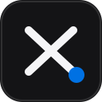

Detectando PC…
Consultando Windows…
Analizando hardware…
Vista rápida de tu hardware, drivers, chequeo de Windows y copias de seguridad.
Elige por dónde empezar según lo que necesite tu PC hoy.
Deja tu PC recién formateado listo con un solo botón: respaldo, drivers, runtimes, tus apps, ajustes de Windows, limpieza y chequeo final. Si hace falta reiniciar, XHANNIZER0 se vuelve a abrir solo y sigue donde quedó.
Usa tu selección actual del catálogo o pega un código de perfil (XHZ1-…).
Detección directa de hardware y comparación con canales oficiales del fabricante, sin bloatware ni instaladores ocultos.
Consultando WMI / CIM
Windows
Comparado con fabricantes
GPU, Placa Madre y Audio
Utilidades técnicas esenciales para validar temperaturas, frecuencias, GPU y mantener Windows limpio.
Tus plataformas de juegos listas para instalar en lote o abrir directamente si ya están presentes.
Imprescindibles tras una instalación limpia de Windows: archivadores, runtimes oficiales y herramientas ligeras.
Espacio dedicado para desarrollo: editores, IA para programar (en la nube y local en GPU), codeo en vivo, APIs, organización y runtimes.
Emuladores open-source descargados directamente desde sus repositorios oficiales de GitHub, siempre en su versión más reciente para Windows.
Busca e instala Spotify, WhatsApp, Netflix o cualquier aplicación oficial disponible en Microsoft Store sin abrir mil ventanas.
Perfiles inteligentes que analizan tu CPU, GPU, VRAM y RAM reales para instalar y optimizar tu equipo sin cometer errores de compatibilidad.
Guarda tu selección actual del catálogo y tus ajustes en la app para aplicarlos con un clic en futuros equipos.
Analiza tu sistema actual y detecta configuraciones recomendadas de rendimiento, precisión, privacidad y pantalla que aún no tienes activadas.
Ajustes sugeridos sin activar
Ya activas en tu Windows
Entradas en HKCU\\Run
Controla qué programas arrancan con tu PC. Desactivar apps innecesarias acelera el inicio tras formatear (100% reversible).
Detecta cualquier aplicación desactualizada en tu PC vía WinGet oficial y actualízala sin abrir instaladores manuales.
Optimiza tus DNS con 1 clic y elimina bloatware preinstalado de Windows de forma segura y reversible.
--
Consultando red
Latencia DNS rápida
Latencia alternativa
Solo apps preinstaladas reversibles desde Microsoft Store. Nunca toca componentes críticos del sistema.
Configuración y ordenamiento limpio de unidades y carpetas tras formatear el equipo.
Respaldos verificados almacenados en XhanniBackups\XHANNIZER0.
Detecta los errores típicos al armar o formatear un PC que Windows no avisa: RAM sin XMP/EXPO, monitor en la placa madre, Resizable BAR, Secure Boot, SSD limitado y dispositivos sin driver.
Ajustes de BIOS o montaje
Comprobaciones superadas
Sin driver o con error
Presiona «Analizar mi PC». Solo lee información, no cambia nada.
Busca en Windows Update el driver oficial (WHQL) que coincide exactamente con el Hardware ID del dispositivo.
La ruta exacta del menú para tu placa madre, solo de lo que el chequeo marcó para revisar.
Antes de formatear, guarda tus programas, ajustes y carpetas en un USB. Después, restáuralos en el PC nuevo con un clic. Nunca se sobrescriben archivos que ya existan.
Se guarda la lista de programas instalados (WinGet), los ajustes de Windows que ya tienes aplicados y las carpetas que marques.
Abre el archivo xhannizer0-migracion.json de tu USB y elige qué restaurar.
Convierte tu selección de apps y los ajustes que ya aplicaste en un código de texto (XHZ1-…). Quien lo pegue aquí recibe las mismas apps y ajustes, sin archivos ni cuentas.
Repara Windows, programa actualizaciones automáticas de tus apps y revisa todo lo que XHANNIZER0 hizo en tu PC.
Windows.old, temporales, caché de Windows Update y de la GPU. Lo que borres aquí no va a la papelera.
Una vez por semana Windows ejecuta winget upgrade --all en segundo plano. No necesita permisos de administrador y puedes desactivarlo cuando quieras.
Todo lo que XHANNIZER0 cambió o instaló en este PC, del más reciente al más antiguo.
Mide tu PC antes y después de optimizarlo, prueba que la RAM aguante con XMP/EXPO y genera un informe en PDF para entregar al cliente.
Mide «Antes» recién formateado o antes de optimizar; después usa XHANNIZER0 y mide «Después». Para comparar bien, mide cada vez unos minutos después de encender el PC.
Todavía no hay mediciones.
Llena parte de la RAM con patrones y los verifica desde todos los núcleos; al final revisa si Windows registró errores de hardware (WHEA). Úsala después de activar XMP/EXPO. Es una prueba rápida: no reemplaza a MemTest86.
Un PDF con el equipo, el chequeo, el antes y después, el trabajo realizado y los programas instalados, listo para firmar.
Personaliza el aspecto, idioma, modo técnico, perfiles y datos de XHANNIZER0.
Traduce toda la app, ventanas de Windows, novedades e informe PDF.
Cambia entre modo oscuro y modo claro translúcido.
Desactiva blur, sombras y animaciones 3D para máxima fluidez en PCs modestas.
Muestra el generador de informe PDF para clientes en Rendimiento e informe.
Avisa con una notificación nativa cuando termina una instalación, reparación o prueba mientras la app está minimizada.
Exporta o importa tu selección de programas y ajustes como archivo local.
Vuelve a elegir idioma, datos del equipo y uso recomendado.
Abre las carpetas locales donde XHANNIZER0 guarda respaldos y configuración.
Navega más rápido por la aplicación sin soltar el teclado.

Versión —
Una app gratuita de xhanni (Xhanni Studios), un estudio pequeño de software en Chile. Hacemos herramientas simples, rápidas y bonitas, y detrás de cada una hay alguien que responde.
Guarda un diagnóstico (.zip) y abre el Discord oficial para crear un ticket. Te responde quien hizo la app. El archivo incluye el nombre del equipo: revísalo antes de compartirlo.
Soporte, ideas y anuncios de nuevas versiones en el Discord de xhanni.
Sin cuentas, sin publicidad y sin telemetría. Todo lo que guarda la app queda en tu PC.
Licencia GNU GPLv3. Revisa el código, propone ideas o mira qué cambió en cada versión.
xhanni también hace Allmighty, el bot que administra tu Discord, además de bots, sitios web y proyectos de ciberseguridad a medida.
XHANNIZER0 se entrega sin garantías (licencia GNU GPLv3): úsala bajo tu responsabilidad y mantén tus respaldos. Las marcas mencionadas pertenecen a sus dueños.